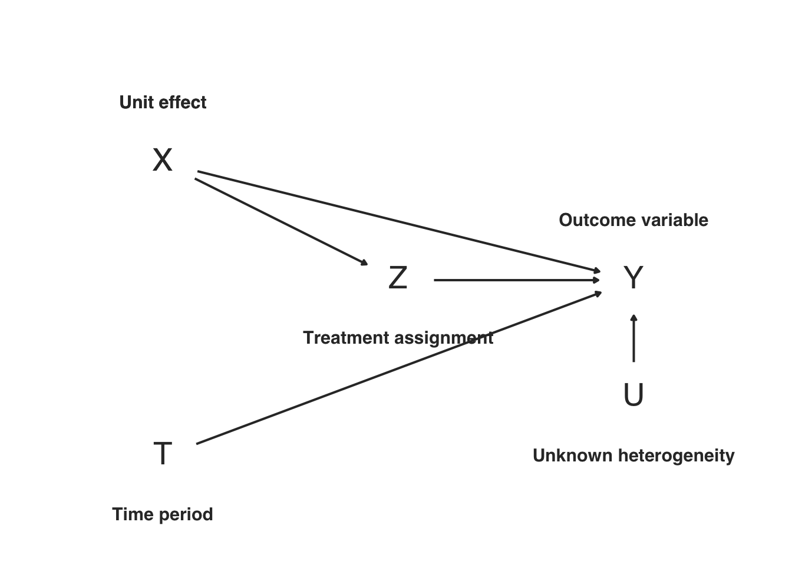
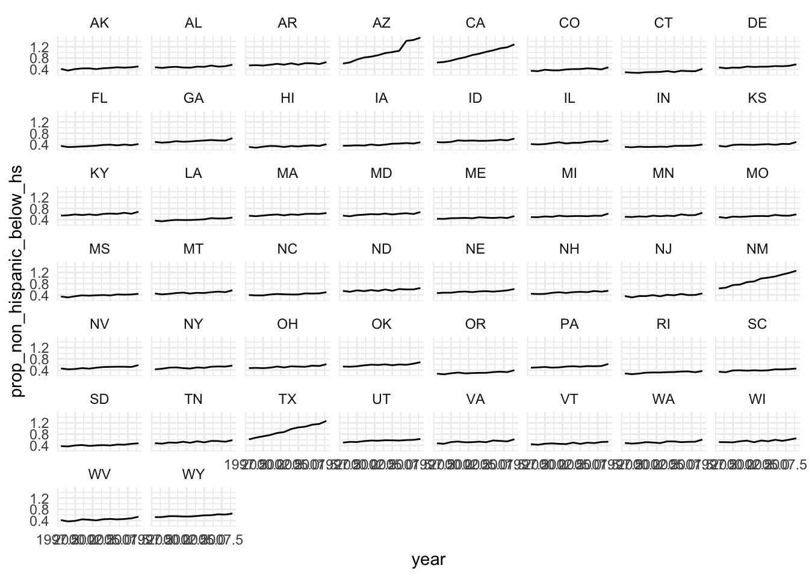
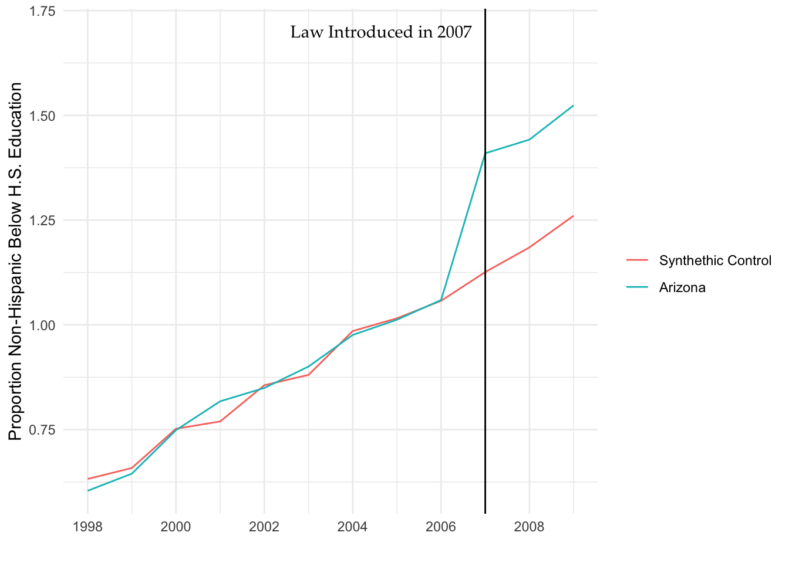
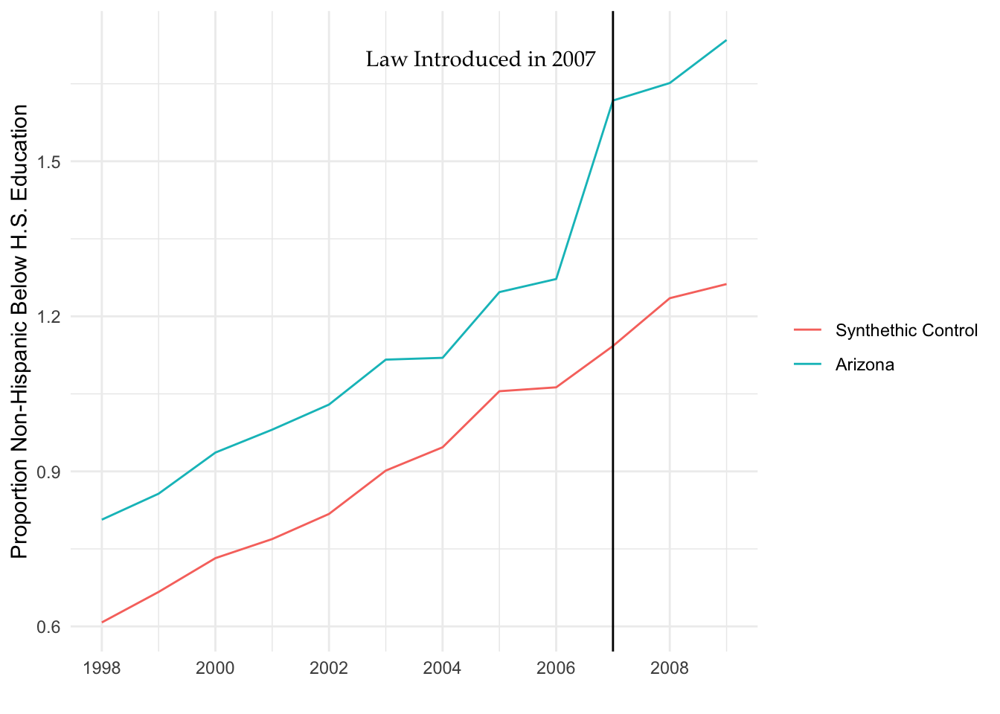

16.7 Synthetic controls
16.7.1 Declaration
design <-
declare_population(
unit = add_level(N = 10, units = 1:N, X = rnorm(N, sd = 0.5)),
period = add_level(N = 3, time = 1:N, nest = FALSE),
unit_period = cross_levels(by = join(unit, period), U = rnorm(N))
) +
declare_potential_outcomes(Y ~ X + 0.5 * as.numeric(period) + Z + U) +
declare_estimand(ATE = mean(Y_Z_1 - Y_Z_0), subset = period == 3) +
declare_step(handler = mutate, Z = unit == "01") +
declare_reveal(Y = if_else(Z == 0 | period < 3, Y_Z_0, Y_Z_1), handler = mutate) +
declare_step(predictors = "X",
time.predictors.prior = 1:2,
dependent = "Y",
unit.variable = "units",
time.variable = "time",
treatment.identifier = 1,
controls.identifier = 2:10,
handler = synth_weights_tidy) +
declare_estimator(Y ~ Z, subset = time >= 3, weights = synth_weights, model = lm_robust, label = "synth")16.7.2 Dag
# Simulation --------------------------------------------------------------
# simulations <- simulate_design(design, sims = 100)
# ggplot(simulations, aes(estimate)) + geom_histogram()
# Synth plot --------------------------------------------------------------
# data <- draw_data(design)
# summary_df <- data %>%
# group_by(Z, time) %>%
# summarize(Y = weighted.mean(Y, w = synth_weights))
# ggplot(summary_df, aes(x = time, y = Y, color = Z)) +
# geom_line(size = 2, alpha = 0.5) +
# geom_line(data = data, aes(x = time, y = Y, group = units), color = "black", alpha = 0.3) +
# geom_point(data = data, aes(x = time, y = Y, size = synth_weights^2), alpha = 0.3) +
# geom_vline(xintercept = 2.5)
dag <- dagify(Y ~ X + period + Z + U,
Z ~ X)
nodes <-
tibble(
name = c("U", "X", "period", "Z", "Y"),
label = c("U", "X", "T", "Z", "Y"),
annotation = c(
"**Unknown heterogeneity**",
"**Unit effect**",
"**Time period**",
"**Treatment assignment**",
"**Outcome variable**"
),
x = c(5, 1, 1, 3, 5),
y = c(1.5,3.5, 1, 2.5, 2.5),
nudge_direction = c("S", "N", "S", "S","N"),
answer_strategy = "uncontrolled")
ggdd_df <- make_dag_df(dag, nodes, design)
base_dag_plot %+% ggdd_df
16.7.3 Example
Modeled after the example here:
Did the 2007 Legal Arizona Workers Act Reduce the State’s Unauthorized Immigrant Population? Sarah Bohn, Magnus Lofstrom, and Steven Raphael The Review of Economics and Statistics 2014 96:2, 258-269 Abstract: We test for an effect of Arizona’s 2007 Legal Arizona Workers Act (LAWA) on the proportion of the state’s population characterized as noncitizen Hispanic. We use the synthetic control method to select a group of states against which Arizona’s population trends can be compared. We document a notable and statistically significant reduction in the proportion of the Hispanic noncitizen population in Arizona. The decline observed matches the timing of LAWA’s implementation, deviates from the time series for the synthetic control group, and stands out relative to the distribution of placebo estimates for other states in the nation.
Outline: (1) how does synth work? - declaration: set up states with time trends and levels that are both correlated with a type and following the linear model assumed by SCM - try three estimators: (1) difference-in-difference; (2) single difference in treated period; and (3) difference in treated period weighted by Synth weights. - show that synth works under its assumptions; plot of time series of treat and synthetic control; plot of the time series from all units to illustrate which are picked (sorted by weights) (2) what are synth’s assumptions? - linear model; treated unit is in convex hull of control units’ pretreatment time series (3) how to diagnose when you are outside the convex hull - declaration outside the convex hull and use the Abadie diagnostic demonstrating a poor match. (possibly explore power of this diagnostic) - show that synth is biased in this setting. augsynth is not.
# tidy function that takes data and just adds the synthetic control weights to it
synth_weights_tidy <- function(data) {
dataprep.out <- dataprep(
foo = data,
predictors = "prop_non_hispanic_below_hs",
predictors.op = "mean",
time.predictors.prior = 1998:2006,
dependent = "prop_non_hispanic_below_hs",
unit.variable = "state_number",
time.variable = "year",
treatment.identifier = 4,
controls.identifier = c(1:3, 5:50), # states without Arizona
time.optimize.ssr = 1998:2006,
time.plot = 1998:2009)
capture.output(fit <- synth(data.prep.obj = dataprep.out))
tab <- synth.tab(dataprep.res = dataprep.out, synth.res = fit)
data %>%
left_join(tab$tab.w %>% mutate(synth_weights = w.weights) %>% dplyr::select(synth_weights, unit.numbers), by = c("state_number" = "unit.numbers")) %>%
mutate(synth_weights = replace(synth_weights, state_number == 4, 1))
}
augsynth_tidy <- function(data) {
fit <- augsynth(prop_non_hispanic_below_hs ~ legal_worker_act, state, year, t_int = 2007, data = data)
res <- summary(fit)$att %>% filter(Time == 2007) %>% select(Estimate, Std.Error)
names(res) <- c("estimate", "std.error")
res$p.value <- 2 * pt(-abs(res$estimate/res$std.error), df = nrow(data) - 15)
res$conf.low <- res$estimate - 1.96 * res$std.error
res$conf.high <- res$estimate + 1.96 * res$std.error
res
}
# note need to clean up the range of the data, currently over 1
design <-
declare_population(
states = add_level(
N = 50,
state = state.abb,
state_number = as.numeric(as.factor(state)),
state_shock = runif(N, -.15, .15),
border_state = state %in% c("AZ", "CA", "NM", "TX"),
state_shock = ifelse(border_state, .2, state_shock)
),
years = add_level(
N = 12, nest = FALSE,
year = 1998:2009,
post_treatment_period = year >= 2007,
year_shock = runif(N, -.025, .025),
year_trend = year - 1998
),
obs = cross_levels(
by = join(states, years),
# treatment indicator:
legal_worker_act = if_else(post_treatment_period == TRUE & state == "AZ", 1, 0),
state_year_shock = runif(N, -.025, .025),
prop_non_hispanic_below_hs_baseline =
0.4 + state_shock + year_shock + (.01 + .05 * border_state) * year_trend + state_year_shock
)
) +
declare_potential_outcomes(
prop_non_hispanic_below_hs ~ prop_non_hispanic_below_hs_baseline + 0.25 * legal_worker_act,
assignment_variable = legal_worker_act) +
declare_estimand(
ATE_AZ = mean(prop_non_hispanic_below_hs_legal_worker_act_1 -
prop_non_hispanic_below_hs_legal_worker_act_0),
subset = legal_worker_act == TRUE) +
declare_reveal(prop_non_hispanic_below_hs, legal_worker_act) +
declare_step(handler = synth_weights_tidy) +
declare_estimator(
prop_non_hispanic_below_hs ~ legal_worker_act,
subset = year >= 2007, weights = synth_weights, model = lm_robust, label = "synth") +
declare_estimator(
prop_non_hispanic_below_hs ~ legal_worker_act, subset = year >= 2007,
model = lm_robust, label = "unweighted") +
declare_estimator(
prop_non_hispanic_below_hs ~ I(state == "AZ") + post_treatment_period + legal_worker_act, term = "legal_worker_act",
model = lm_robust, label = "unweighted_did") +
declare_estimator(handler = tidy_estimator(augsynth_tidy), label = "augsynth")state_data <- draw_data(design)
state_data %>% dplyr::select(state, synth_weights) %>% distinct %>% arrange(-synth_weights) %>% head## state synth_weights
## 1 AZ 1.000
## 2 NM 0.990
## 3 TX 0.007
## 4 CA 0.001
## 5 AL 0.000
## 6 AK 0.000
state_data %>%
mutate(treatment_state = factor(state == "AZ", levels = c(FALSE, TRUE), labels = c("Synthethic Control", "Arizona"))) %>%
group_by(treatment_state, year) %>%
summarize(prop_non_hispanic_below_hs = weighted.mean(prop_non_hispanic_below_hs, w = synth_weights)) %>%
ggplot(aes(x = year, y = prop_non_hispanic_below_hs, color = treatment_state)) +
geom_line() +
geom_vline(xintercept = 2007) +
scale_x_continuous(breaks = scales::pretty_breaks()) +
annotate("text", x = 2006.7, y = 1.7, label = "Law Introduced in 2007", hjust = "right", family = "Palatino") +
labs(color = "") +
xlab("") + ylab("Proportion Non-Hispanic Below H.S. Education") +
dd_theme()
Now all that simulating, saving, and loading is done, and we can use the simulations for whatever you want.
synth_diagnosands <- declare_diagnosands(select = c("bias", "rmse", "coverage"))
diagnosis <- diagnose_design(simulations, diagnosands = synth_diagnosands, bootstrap_sims = b_sims)
kable(reshape_diagnosis(diagnosis))| Design Label | Estimand Label | Estimator Label | Term | N Sims | Bias | RMSE | Coverage |
|---|---|---|---|---|---|---|---|
| design | ATE_AZ | augsynth | NA | 1000 | 0.00 | 0.02 | 0.66 |
| (0.00) | (0.00) | (0.01) | |||||
| design | ATE_AZ | synth | legal_worker_act | 1000 | 0.01 | 0.02 | 1.00 |
| (0.00) | (0.00) | (0.00) | |||||
| design | ATE_AZ | unweighted | legal_worker_act | 1000 | 0.66 | 0.66 | 0.00 |
| (0.00) | (0.00) | (0.00) | |||||
| design | ATE_AZ | unweighted_did | legal_worker_act | 1000 | 0.28 | 0.28 | 0.00 |
| (0.00) | (0.00) | (0.00) |
- we see that Synth outperforms either method
16.7.4 When there are not good controls, standard synth will get the wrong answer
# declaration outside the convex hull
design_outside_hull <- replace_step(
design,
step = 2,
new_step = declare_potential_outcomes(
prop_non_hispanic_below_hs ~ prop_non_hispanic_below_hs_baseline + 0.25 * legal_worker_act + 0.2 * (state == "AZ"),
assignment_variable = legal_worker_act))
state_data_outside_hull <- draw_data(design_outside_hull)Now all that simulating, saving, and loading is done, and we can use the simulations for whatever you want.
diagnosis_outside_hull <- diagnose_design(simulations_outside_hull, diagnosands = synth_diagnosands, bootstrap_sims = b_sims)
kable(reshape_diagnosis(diagnosis_outside_hull))| Design Label | Estimand Label | Estimator Label | Term | N Sims | Bias | RMSE | Coverage |
|---|---|---|---|---|---|---|---|
| design_outside_hull | ATE_AZ | augsynth | NA | 1000 | -0.01 | 0.03 | 0.75 |
| (0.00) | (0.00) | (0.01) | |||||
| design_outside_hull | ATE_AZ | synth | legal_worker_act | 1000 | 0.20 | 0.20 | 0.00 |
| (0.00) | (0.00) | (0.00) | |||||
| design_outside_hull | ATE_AZ | unweighted | legal_worker_act | 1000 | 0.86 | 0.86 | 0.00 |
| (0.00) | (0.00) | (0.00) | |||||
| design_outside_hull | ATE_AZ | unweighted_did | legal_worker_act | 1000 | 0.28 | 0.28 | 0.00 |
| (0.00) | (0.00) | (0.00) |
# plot the synthetic control constructed in this way (it usually picks just texas and is highly biased)
state_data_outside_hull %>%
mutate(treatment_state = factor(state == "AZ", levels = c(FALSE, TRUE), labels = c("Synthethic Control", "Arizona"))) %>%
group_by(treatment_state, year) %>%
summarize(prop_non_hispanic_below_hs = weighted.mean(prop_non_hispanic_below_hs, w = synth_weights)) %>%
ggplot(aes(x = year, y = prop_non_hispanic_below_hs, color = treatment_state)) +
geom_line() +
geom_vline(xintercept = 2007) +
scale_x_continuous(breaks = scales::pretty_breaks()) +
annotate("text", x = 2006.7, y = 1.7, label = "Law Introduced in 2007", hjust = "right", family = "Palatino") +
labs(color = "") +
xlab("") + ylab("Proportion Non-Hispanic Below H.S. Education") +
dd_theme()